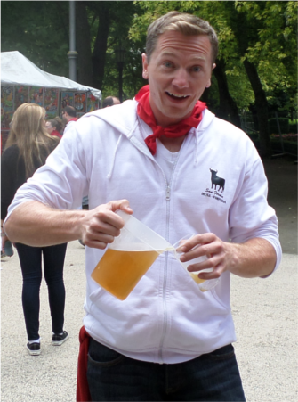

 Dave Metzler
Dave Metzler
GIS Person
Reader of Books
Player of Hockey
Fiddler of Piano and fingerer of Bass
Attempting to be Handsome
About

A little bit about myself
I have been in the GIS game for almost 6 years now. Over the years I have bested many challenges and learned new things. Currently I am becoming fond of the Open Source environment because of its cost and punk rock attitude. That being said day to day I am still firmly entrenched in ArcGIS (10.2) and still keep abreast of the software’s development. I think there is room enough in the world for both of them and having an understanding of both sides only furthers your GIS skills.
Projects
Most of my experience is in the oil and gas game but I have dipped my toes into a little contracting on the municipal level and a little volunteer work in the Mediterranean. With that said here is a brief smattering of some of the things I have worked on as I finally grew chest hair.
Other fine things
Now that all of the GIS stuff is taken care of (for this section at least) here are a few of the other things I am interested in. I play a little rec league hockey on thursday nights and we are desperately grasping onto our title as reigning champions. I am fond of books, in particular Hemingway, Marquez, Vonnegut and most recently Knausgaard (read this as soon as your can). Also, I play a little music on the side and generally love creating things collaberativly; have a listen here.
Education
High School
I spent my pre formative years at Longmont High School in the cozy little hamlet of Longmont, Colorado.
The school of Hard Knocks
When I left High School I had simple and meager aims, mostly involving ladies. This path pushed me towards life in a kitchen; day in day out until I found a better way.
Front Range Community College
After some cold hard life lessons I decided to enroll in FRCC. A couple of years past of reading a few good books, flirting with the idea of studying History and night after night of classes I held Associates Degree.
University of Colorado - Denver
Upon completing my Associates Degree I stumbled pensively into the big city (well big for Colorado) and started to pursue a degree in geography with an emphasis on GIS. after a few years I am the proud holder of a Bachelor's degree.
Experience
Skills
Web Development
Recently I have been Bringing some Open Source Pain to the internet in paultry web applications, mostly based on Leaflet.js. I hope to continue my efforts, with map after map, until one day I am decent at it.
GIS
I still spend most of my GIS time inside ArcGIS but I am leveraging QGIS more and more, mostly for tools and services locked out by extensions or license levels. With the arsenal of both sets of tools at my disposal I am next to unstoppable!
Python
I started to integrate python into my day to day GIS dealings and now I cannot imagine working without it. With some simple scripting it is amazing what you can do. Don't believe me? Have a download of this zip file and enjoy some various GIS tasks automated (with ArcGIS) to your delight.
ArcGIS
I first learned GIS using ArcGIS 9.0 (I feel so old) and I continue to use it daily. Over the years I have dabbled in most extensions and put together my fair share of models and scripts. After using it for so long I feel confident in my skills to do quite a number of things with ESRI.
Mobile
My first job inside of GIS was as a mobile data collector. Due to this I have worked on several mobile projects and have seen first hand the evolution. Back in my day we used Trimble Units and Cartopac Field solutions. Today it is moving quickly to android devices and egalitarian data collection but the principles remain the same.
Server
In getting an open source web solution going at Halker I have dove head first into the world of server administration. From roles to users all the way to PHP I have dipped my toes into all of it to get GIS server running.
Portfolio
Demographics Map
Using data from DRCOG I put together this simple demographics map, attempting to show the change in population percentages by race between census years. the result may not be the nicest thing to look at but it comunicates something and charts the beginning of my Open Source Odessy
Recreation Center Map
I love a good pump, we all do, but navigating the Denver Parks and Rec site can be brutal. So I decided to work off of the bootleaf template and spin off a simple map using data from denvers open data catalog. Sometimes you have to get swollen.